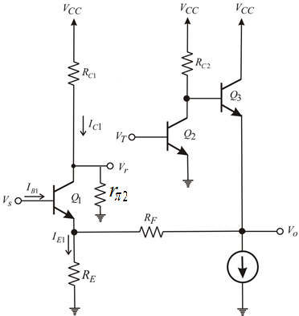
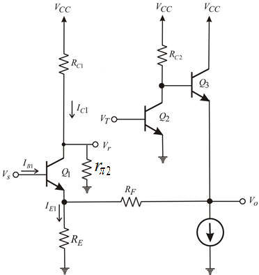

Refer to the circuit diagram in Figure P10.41 in the textbook.
Break the loop at the base of transistor and apply a test voltage
and apply a test voltage  to the gate of transistor
to the gate of transistor .
.

Figure 1
Refer to the circuit diagram in Figure P10.41 in the textbook.
Break the loop at the base of transistor and apply a test voltage to the gate of transistor.

Figure 1
From the circuit, the voltage  is,
is,
Voltage across the collector terminal of transistor  is,
is,
Current through the collector terminal of transistor is,
is,
Write the expression for collector current  using current division.
using current division.
Substitute for in equation .
From the circuit, the current  is,
is,
Substitute for in the equation.
Current through the base terminal of transistor is,
is,
Current through the collector terminal of transistor is,
is,
Determine the loop gain of the amplifier.
Define loop gain.
Substitute for and for  in the equation.
in the equation.
Substitute for in the equation.
Substitute for in the equation.
Therefore, the loop gain of the amplifier  is,
is,
.